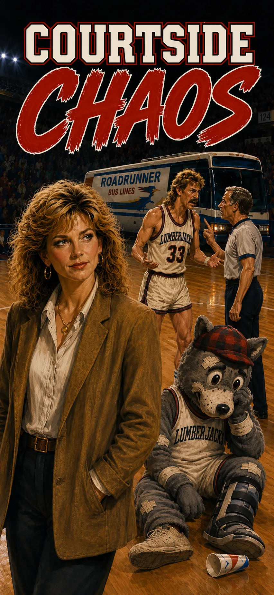
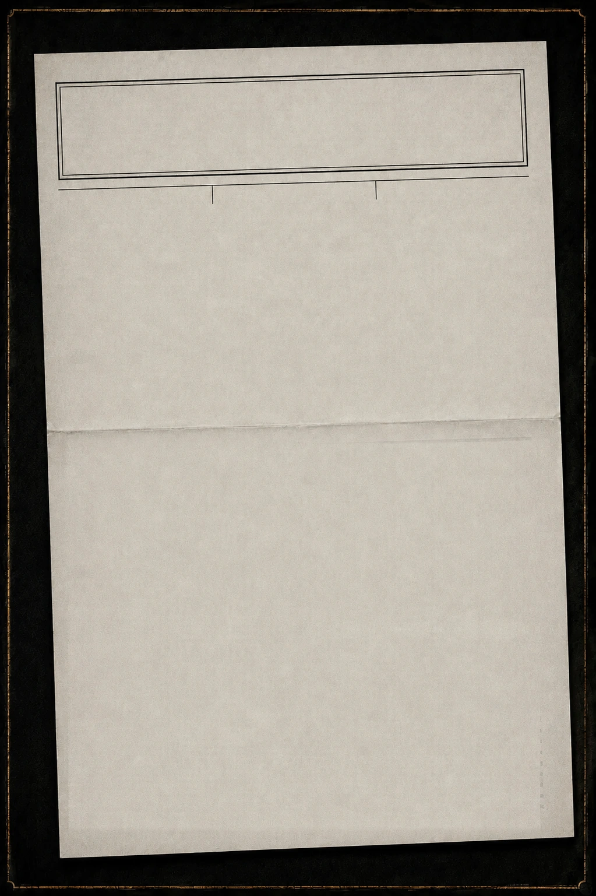
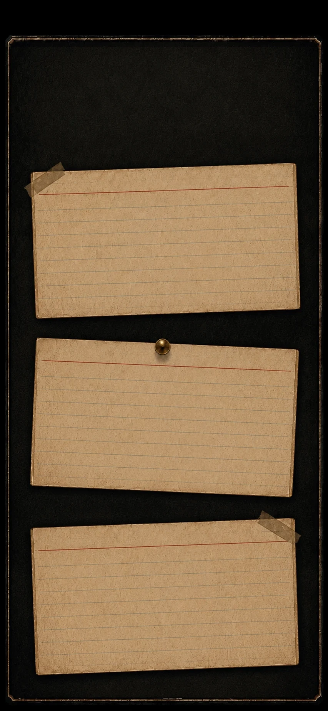
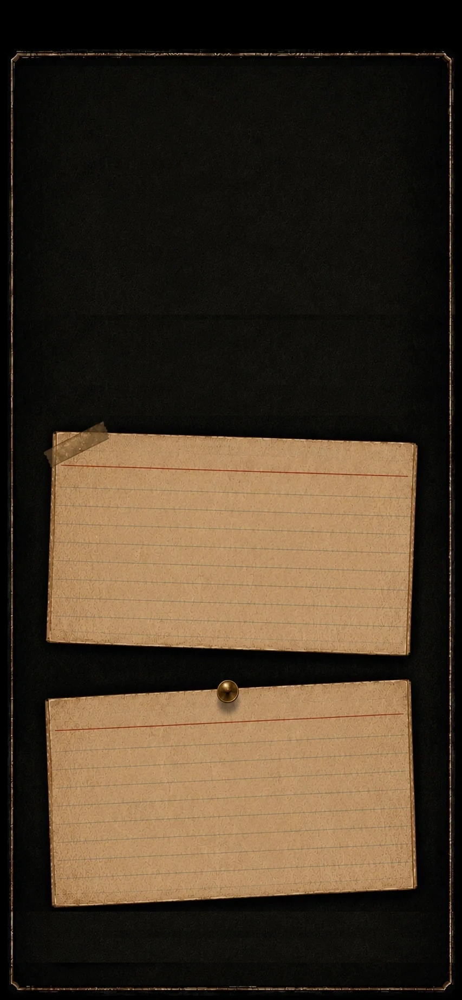
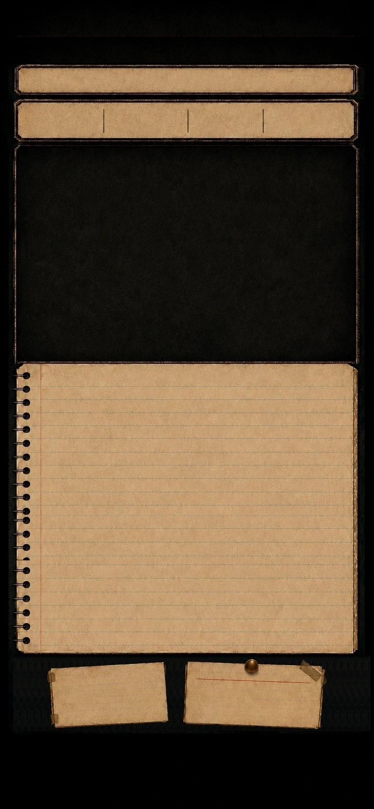

CONTINUE
START
TAP TO CONTINUE
What the hell was I thinking?...
TAP TO CONTINUE
FINAL
FILE PHOTOPENDING
TAP TO CONTINUE

The Frostbite Gazette
NORTH COUNTRYWEEK 115¢
HEADLINE
ALSO IN THIS ISSUE
TAP TO CONTINUE
THE FILING CABINET
Tap a folder. Put it back where you found it.
FILE PHOTOPENDING
◀ BACK

THE CALL
Owner's call. It goes in the ledger either way.
A.
B.
C.

3RD QUARTER

CASH$55,000
MORALE72%
BUZZ48%
CRED36%
LUMBERJACKS
SEASON1
WEEK01
STREAK—
SANDRA
DAY ONE
Monday morning. The actual first day, if we're not counting yesterday — which I'm not, since most of it was you meeting people through a folder.
Straight to business, then. Tiny worked the Open Mic downtown last night, and about thirty of his forty minutes were an impression of you. I'd call it unflattering. The room disagreed. Loudly.
So... what's the first order of business?
▼
THIS WEEK
vs FARGO
HOME NIGHT
THIS WEEK
MAKE THE CALL ▶
Your move, boss.
RECORD
0-0
FIRST GAME
NORTHERN DIVISION • SEASON OPENS